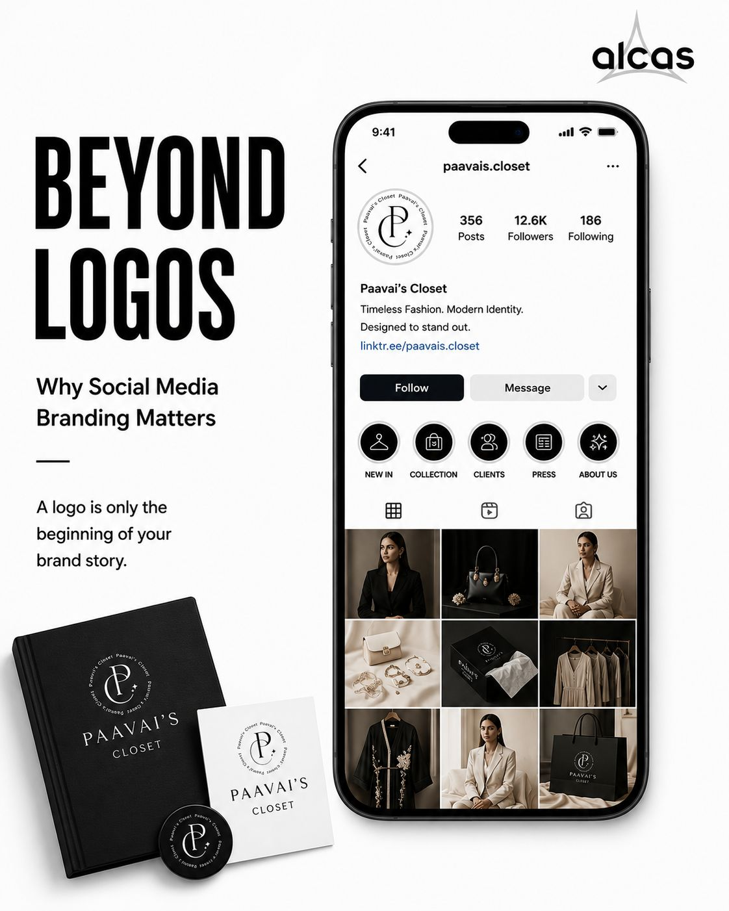

● 8 SLIDES

ALCAS Digital Marketing Agency
Brand Strategy
Beyond Logos: Why Social Media Branding Matters
LinkedIn thought leadership carousel analyzing why social media branding extends far beyond a logo, featuring client proof and profile audit insights.
Project #01